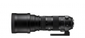

器材库 > 35mm画幅AF变焦镜头 / 150-600/5-6.3 DG OS HSM / Sports > 150-600/5-6.3 DG OS HSM | Sports

详细规格
镜头类型
超远摄变焦镜头
发布日期
2014-09-15
焦距
150-600mm
最大光圈
F5-6.3
最小光圈
F22
镜头结构
24片/16组
光圈叶片
9片
最近对焦距离
260cm
最大放大倍率
5x倍
驱动马达
HSM（超声波马达）
滤镜口径
105mm
镜头卡口
Canon EF, Nikon F, Sigma SA, Sony E
防抖
是
颜色
黑色
尺寸
121 x 290mm
重量
2960g
autour2015-01-01 21:414.25 分
操作性 4.00耐用性 4.00性价比 4.50解像力 4.50色彩还原 4.00机械结构 4.50